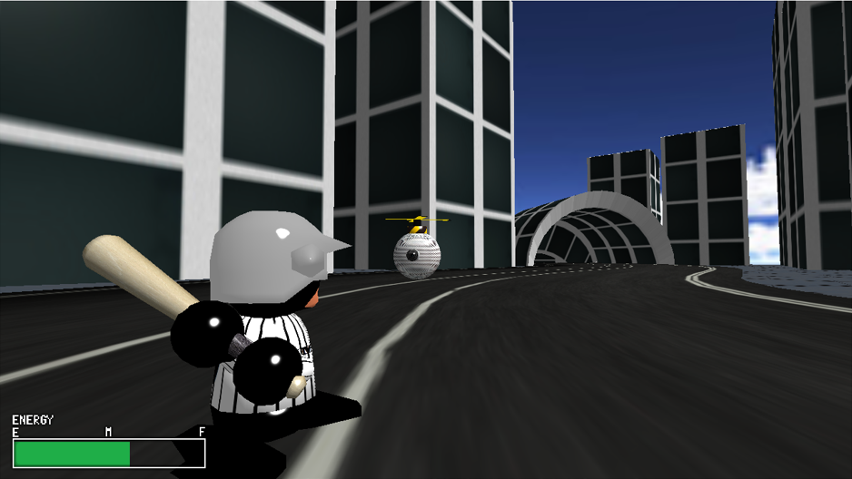
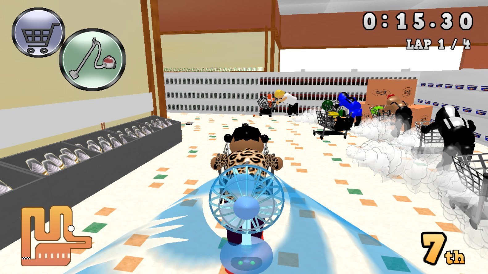
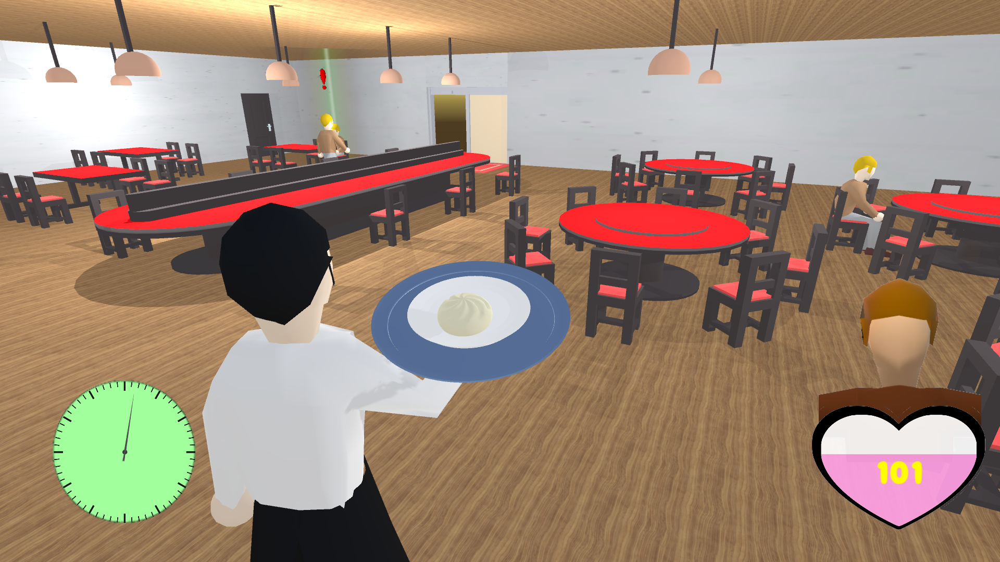

- 
スラッガーズ・ハイ
(個人製作)
C++で製作した個人作品になります。サイボーグ手術を受けた野球選手が街を支配したドローンと
対峙するという内容の作品となっています。当初は順調に製作を進めていましたが途中で作品の方向性を見失ったことで挫折し、
その結果、完成にこぎ着くことが出来ませんでした。
しかし、この時の教訓をもとに後のチームでの制作に取り組んだことでさらにより良い作品を完成させることができました。
良くも悪くも、学生時代の中でもっとも印象に残っている作品です。
対峙するという内容の作品となっています。当初は順調に製作を進めていましたが途中で作品の方向性を見失ったことで挫折し、
その結果、完成にこぎ着くことが出来ませんでした。
しかし、この時の教訓をもとに後のチームでの制作に取り組んだことでさらにより良い作品を完成させることができました。
良くも悪くも、学生時代の中でもっとも印象に残っている作品です。
- 
スタックマーケット
(チーム制作)
走って、積んで、競い合え！
スーパーマーケットが舞台の新感覚レースアクション。おばちゃんが主婦、モヒカン、謎のレーサー達を相手に
ショッピングカートの中に入れた商品の数と速さで競い合います。
C++とDirectX 11での環境で製作しており、主にキャラクターのモデリングやモーションプログラムの作成を行いました。
世界観の面白さとゲーム性が評価され、校内のコンクールであるDigitalWorksで優秀賞を受賞することができました。
ショッピングカートの中に入れた商品の数と速さで競い合います。
C++とDirectX 11での環境で製作しており、主にキャラクターのモデリングやモーションプログラムの作成を行いました。
世界観の面白さとゲーム性が評価され、校内のコンクールであるDigitalWorksで優秀賞を受賞することができました。
- 
GARCON MEISTER
(チーム制作)
こぼさずに運びきれ。
レストランのウエイターとして、完成した料理をお客様の元まで運びきることが目的です。
到着するだけではなく、いかにプレートの上のお皿から料理をこぼさずに運ぶかというスコアアタック要素も備えています。
繊細な操作を求められる作品をUnityを使って製作したいという希望から、このような作品が出来上がりました。
主にキャラクターのデザインやモーション、移動についての処理の部分を担当しました。
シュールな見た目とは裏腹にリアルな操作感が評価され、こちらもDigitalWorksで優秀賞を獲得いたしました。
到着するだけではなく、いかにプレートの上のお皿から料理をこぼさずに運ぶかというスコアアタック要素も備えています。
繊細な操作を求められる作品をUnityを使って製作したいという希望から、このような作品が出来上がりました。
主にキャラクターのデザインやモーション、移動についての処理の部分を担当しました。
シュールな見た目とは裏腹にリアルな操作感が評価され、こちらもDigitalWorksで優秀賞を獲得いたしました。